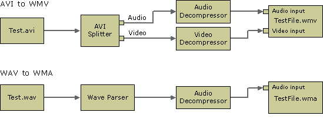

title: Transcoding Files (QASF) description: Transcoding Files (QASF) ms.assetid: c6dad6cf-4781-4204-883b-cdb33aff5e27 keywords:
[The feature associated with this page, Windows Media Format 11 SDK, is a legacy feature. It has been superseded by Source Reader and Sink Writer. Source Reader and Sink Writer have been optimized for Windows 10 and Windows 11. Microsoft strongly recommends that new code use Source Reader and Sink Writer instead of Windows Media Format 11 SDK, when possible. Microsoft suggests that existing code that uses the legacy APIs be rewritten to use the new APIs if possible.]
You can build a file-transcoding filter graph using the WM ASF Writer in various ways. The easiest way is to co-create, configure, and add the WM ASF Writer to the filter graph, and then use the IGraphBuilder::RenderFile method to build the graph automatically.
An alternative way is to add each filter manually to the graph and connect the pins. After adding the WM ASF Writer, configure it by using the IConfigAsfWriter methods if the default profile is not suitable, and connect the WM ASF Writer input pins to the corresponding output pins on the upstream filters.
The following illustration shows typical WM ASF Writer transcoding filter graph configurations.

Â
Â